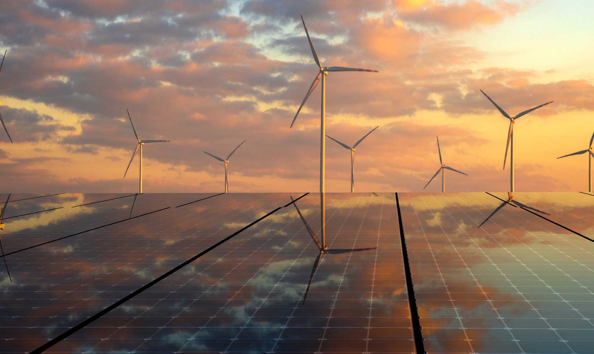

Energía solar fotovoltáica
La energía solar fotovoltaica es un tipo de energía renovable que convierte la luz solar en electricidad mediante el uso de paneles solares compuestos por células fotovoltaicas.
Estas células están hechas de materiales semiconductores, como el silicio, que generan corriente eléctrica cuando son expuestos a la radiación solar.
¿Cómo funciona?
- Captación de luz solar: Los paneles solares absorben la radiación del Sol.
- Conversión en electricidad: Las células fotovoltaicas transforman la luz en corriente eléctrica de tipo continua (CC).
- Inversión de corriente: Un inversor convierte la corriente continua en corriente alterna (CA), que es la utilizada en hogares e industrias.
- Uso o almacenamiento: La electricidad generada puede consumirse en el momento o almacenarse en baterías para su uso posterior.

Energía solar térmica
La energía solar térmica es un tipo de energía renovable que aprovecha la radiación del Sol para generar calor,
el cual puede utilizarse en diversas aplicaciones, como calefacción, calentamiento de agua o generación de electricidad.
¿Cómo funciona?
- Captación de la radiación solar: Se utilizan colectores solares térmicos para absorber la energía del Sol.
- Transferencia del calor: El calor captado calienta un fluido (agua o aceite térmico) que circula dentro de los colectores.
- Almacenamiento y distribución: El calor se almacena en depósitos para su uso posterior o se distribuye directamente para calefacción o procesos industriales.
- Generación de electricidad (en plantas termosolares): En instalaciones a gran escala, el calor se usa para producir vapor que mueve turbinas generadoras de electricidad.
Tipos de Energía Solar Térmica
- Baja temperatura (hasta 65 °C): Para calentar agua en hogares, piscinas o calefacción por suelo radiante.
- Media temperatura (hasta 250 °C): Usada en procesos industriales y generación de vapor.
- Alta temperatura (más de 500 °C): En plantas termosolares, donde el calor se concentra con espejos para generar electricidad.

Energía solar pasiva
La energía solar pasiva es el aprovechamiento de la radiación solar sin el uso de dispositivos mecánicos o eléctricos. Se basa en el diseño arquitectónico y la selección de materiales para maximizar la captación, almacenamiento y distribución del calor del Sol de manera natural.
Principios de la energía solar pasiva
- Orientación del edificio: Se diseñan las construcciones para captar la mayor cantidad de luz y calor solar, especialmente en invierno.
- Materiales térmicos: Se utilizan materiales con alta inercia térmica (como piedra, ladrillo o concreto) para absorber y liberar calor lentamente.
- Ventilación natural: Se diseñan aberturas estratégicas para permitir la circulación del aire y regular la temperatura interior.
- Uso de superficies acristaladas: Las ventanas y tragaluces permiten el ingreso de la luz solar, calentando los espacios interiores.
- Protección solar en verano: Elementos como aleros, pérgolas o vegetación ayudan a evitar el sobrecalentamiento en estaciones cálidas.

Energia solar hibrida
La energía solar híbrida es un sistema que combina la energía solar con otra fuente de energía (como eólica, diésel, gas o baterías) para garantizar un suministro eléctrico constante y eficiente.
¿Como funciona?
- Captación de la energía solar: Se utilizan paneles solares fotovoltaicos o colectores solares térmicos.
- Generación y almacenamiento: La energía generada se consume directamente o se almacena en baterías para su uso posterior.
- Sistema de respaldo: Cuando la producción solar es insuficiente (por ejemplo, en días nublados o de noche), entra en funcionamiento la fuente de energía secundaria.
- Gestión inteligente: Algunos sistemas híbridos incluyen tecnología que optimiza el uso de cada fuente según la demanda y disponibilidad.
Tipos de sistemas híbridos
- Solar + Eólica: Combinación de paneles solares y aerogeneradores para aprovechar tanto el Sol como el viento.
- Solar + Diésel o Gas: Se usa en zonas aisladas donde un generador de combustibles fósiles actúa como respaldo.
- Solar + Baterías: Almacena el exceso de energía solar para su uso cuando no hay sol.
- Solar + Red Eléctrica: Permite consumir energía solar cuando está disponible y usar la red cuando no lo está.
Ventajas
- ✔ Mayor estabilidad y continuidad del suministro energético.
- ✔ Reducción de costos operativos en comparación con sistemas 100% basados en combustibles fósiles.
- ✔ Menor impacto ambiental, al depender menos de fuentes contaminantes.
